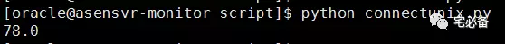
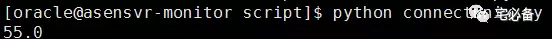

使用paramiko获取HP-Unix系统性能数据
前面介绍了如何运用Python获取Oracle数据库的信息以及将数据存入MySQL数据库中
我们知道对于运维Oracle数据库不能忽略系统的性能指标包括CPU内存等
这个专题将介绍如何使用Python监控linux/Unix服务器的性能指标
上节我们讲了如何连接linux服务器并获取相关信息
这节我们用一节来讲解如何获取HP-Unix的内存,CPU及磁盘分区信息
环境设置
Linux系统为 Centos 6.8
Python环境为 Python 3.6
连接Unix类服务器模块: paramiko
使用的命令
跟linux有所区别我们获取HP-Unix的信息的命令是不一样的
CPU: sar Memory: swapinfo 磁盘: bdf
使用paramiko连接unix服务器
程序名称为:connectunix.py
如下程序使用paramiko连接unix服务器然后获取CPU,内存，磁盘分区信息
具体注释情看详细代码
#!/usr/bin/python
#coding=utf8
import paramiko
def getunixspace(ssh):
result=[]
stdin,stdout,stderr=ssh.exec_command('bdf |awk \' NR>1 {if ($1==$NF){printf $1}else{print $0}}\'')
err=stderr.readlines()
if len(err) != 0:
print (err)
return False
else:
stdout_content=stdout.readlines()
result= stdout_content
try:
if len(result) !=0:
return result
else:
print ('There is something wrong when execute unix bdf command')
except Exception as e :
print (e)
def getunixcpu(ssh):
result=[]
stdin,stdout,stderr=ssh.exec_command('sar 1 3 |awk \'END {print 100-$NF }\'')
err=stderr.readlines()
if len(err) != 0:
print (err)
return False
else:
stdout_content=stdout.readlines()
result= stdout_content
try:
if len(result) !=0:
return round(float(result[0].strip()),2)
else:
print ('There is something wrong when execute unix sar command')
except Exception as e:
print (e)
def getunixmem(ssh):
result=[]
stdin,stdout,stderr=ssh.exec_command('swapinfo -tam | awk \'END { print $5}\'')
err=stderr.readlines()
if len(err) != 0:
print (err)
return False
else:
stdout_content=stdout.readlines()
result= stdout_content
try:
if len(result) !=0:
return round(float(result[0].strip()[0:-1]),2)
else:
print ('There is something wrong when execute unix swapinfo command')
except Exception as e:
print (e)
验证结果


正常情况下会返回该服务器的的相关信息
如不正常，代码中大量的异常处理可以帮助大家快速定位异常点
源码位置
全部代码请查看我的Github主页
https://github.com/bsbforever/wechat_oms
今天就讲到这，下节讲述获取如何利用Python检查Oracle alert日志